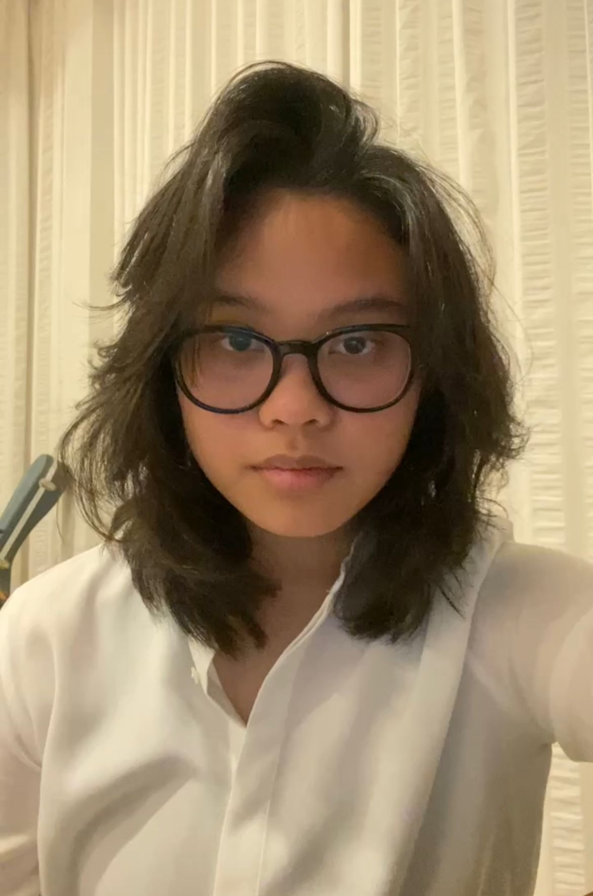

My Resume

Career Objectives
As an aspiring computer science student, I aim to leverage my passion for technology and coding skills to contribute to innovative projects and solutions.
My objective is to gain hands-on experience through internships and collaborative projects, ultimately becoming a proficient software developer who drives impactful technological advancements.
Education
City College Plymouth
International Foundation Course in Science (Jan 2022 - July 2022)University of Greenwich
BSc (Hons) Computer Science (2023 - Present)
Skills
Hard Skills
- Profficiency in Programming Language : Python
- Web Development : HTML
- Experience with Agile/Scrum methodologies
Soft skills
- Teamwork and Collaboration
- Critical Thinking
- Active Listening
Digital Skills
- Microsoft Office Suite (Word, PowerPoint)
- Google Workspace (Docs, Slides)
Others